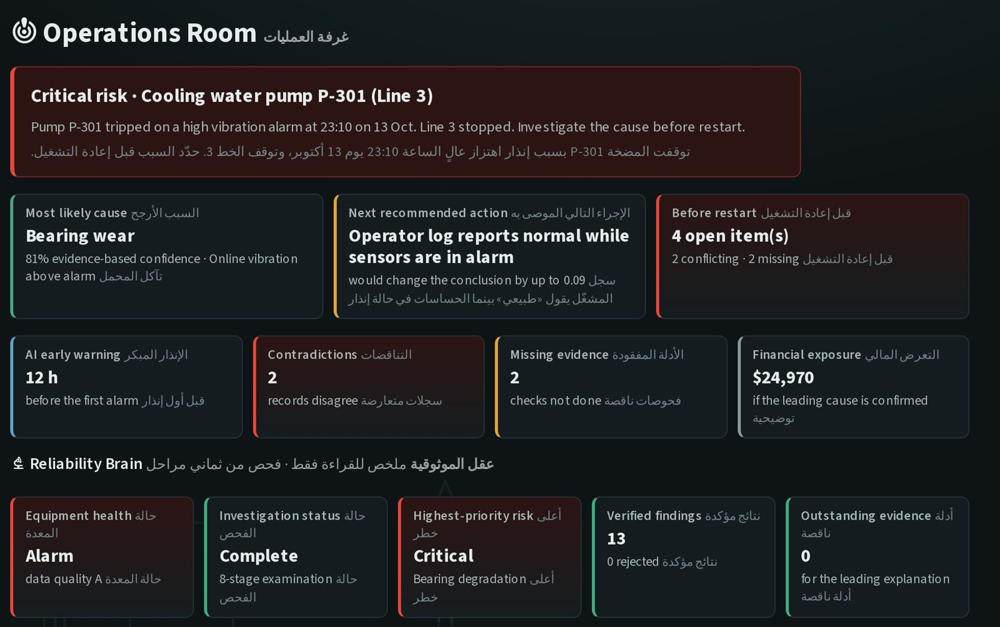

PlantProof AI
Industrial equipment failure investigation and reliability intelligence. When a pump trips, PlantProof AI finds the most likely cause, shows the evidence for it, and tells engineers what to check before restart.منصة للتحقيق في أعطال المعدات الصناعية وذكاء الموثوقية. عندما تتوقف مضخة، تحدد PlantProof AI السبب الأرجح، وتعرض الدليل عليه، وتوضح للمهندسين ما يجب فحصه قبل إعادة التشغيل.
Evidence-based investigationتحقيق قائم على الأدلة
Every conclusion links to the records behind it.كل استنتاج مرتبط بالسجلات التي يستند إليها.
Early warningإنذار مبكر
Flags unusual behaviour hours before an alarm.يرصد السلوك غير الطبيعي قبل الإنذار بساعات.
Reliability Brainعقل الموثوقية
An 8-stage examination that grades data quality and checks the sensors themselves.فحص من ثماني مراحل يقيّم جودة المعطيات ويتحقق من الحساسات نفسها.
Live alarmإنذار مباشر
When a sensor crosses its limit, the Operations Room opens in seconds.عندما يتجاوز الحساس حدّه، تُفتح غرفة العمليات خلال ثوانٍ.
The current version is a working demo built on synthetic plant data.النسخة الحالية نموذج تجريبي يعمل على معطيات مصنع افتراضية.


Likely cause, next action and what blocks a restart, on one screen.السبب الأرجح والإجراء التالي وما يمنع إعادة التشغيل في شاشة واحدة. A reading above the limit raises a red alert, wherever the engineer is in the platform.أي قراءة فوق الحد تطلق تنبيهًا أحمر، في أي صفحة كان المهندس. Eight stages, from data integrity to self-verification.ثماني مراحل، من سلامة المعطيات إلى التحقق الذاتي.